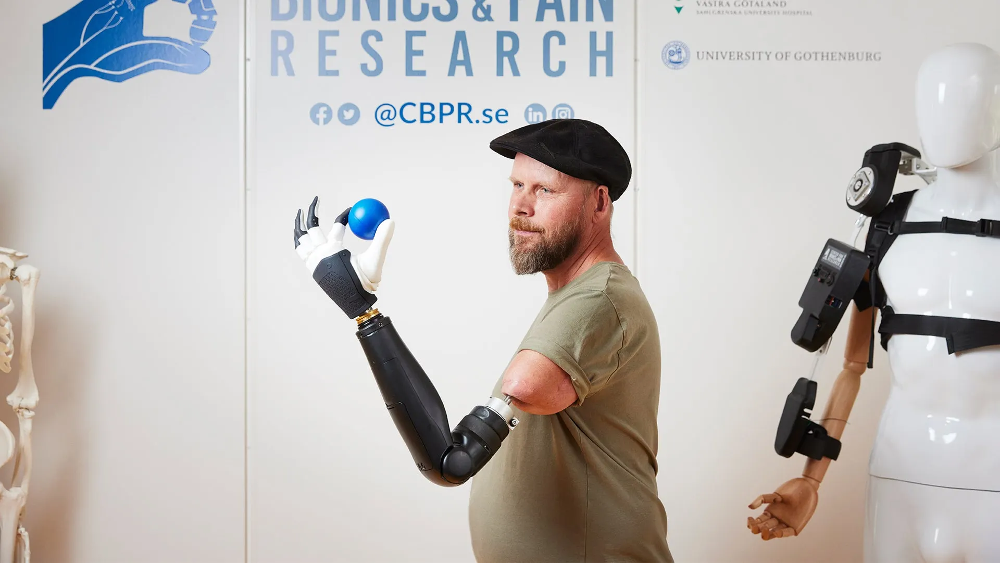

how image recognition can help people see ai / vision how computer vision can describe the world for people who are blind.
 why your next hand could feel real hardware / health the tech behind haptic prosthetics that can pass sensation back to the wearer.